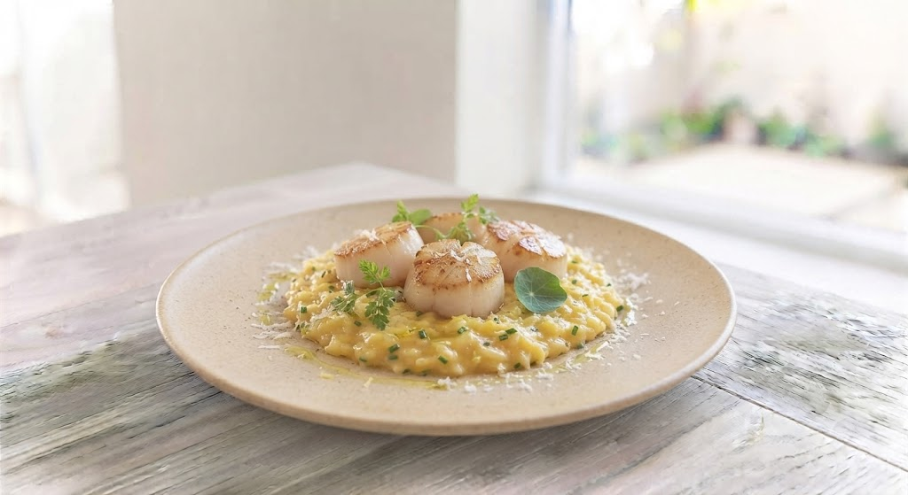
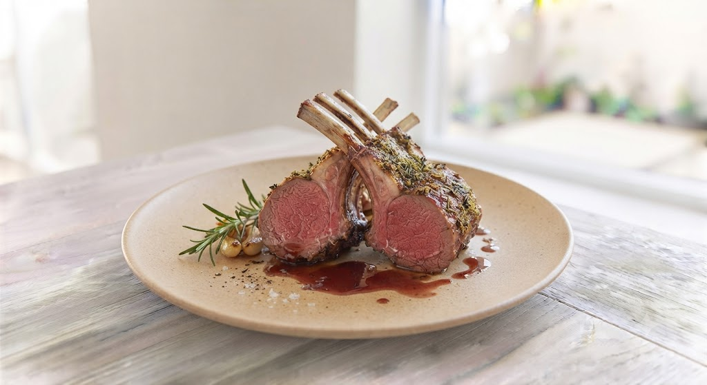
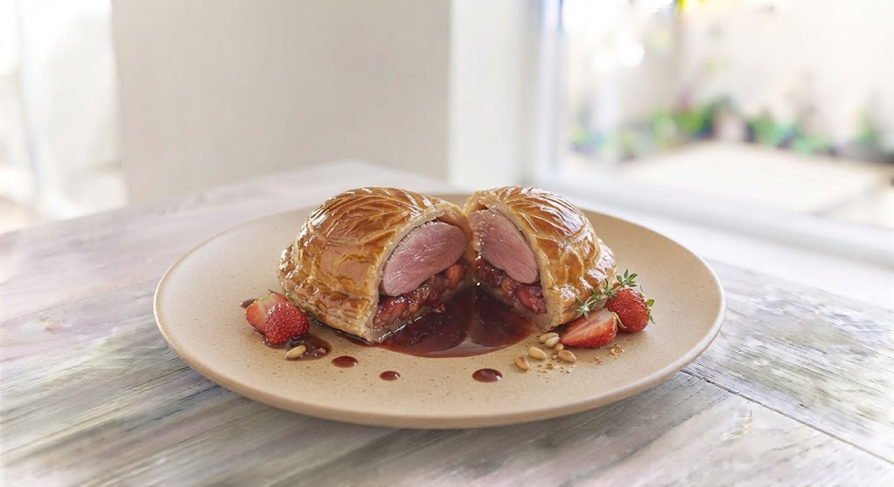

Authentic Bistro
一口で虜にする、
一口で虜にする、
黄金のソース。
札幌・南2条、夫婦で紡ぐフランス料理の真髄
SCROLL
札幌・南2条、夫婦で紡ぐフランス料理の真髄
SCROLL

伝説の名店「コート・ドール」で14年。スーシェフとしてストーブ前を守り続けた屋木宏司が、地元北海道の食材で描くのは、奇をてらわない「王道」のフレンチです。
魚介の旨味を凝縮したスフレのようなクネル、艶やかなアメリケーヌソース。お皿に残ったソースをパンで拭って食べる。そんなビストロらしい至福のひとときをお届けします。
Season's Inspiration

ポルチーニ香る、道産ホタテの贅沢

ローズマリーの香りと柔らかな旨味

フォアグラがとろける、肉の重奏
「札幌に行くならぜひ行ってほしいフランス料理店。クネルのアメリケーヌソースとスフレの優しい味のバランスが最高でした。雰囲気も接客も温かく、新婚旅行の最高の思い出になりました。」
— 24年12月 訪問のお客様
「料理が丁寧に作られており、何を食べても美味しい。提供には時間がかかるので、ゆっくりワインを楽しみたい時に。ハウスワインのカラフェもリーズナブルで嬉しいです。」
— 常連のお客様
より快適に、特別なお食事をお楽しみいただくために
「仕込み中や営業時間中でお電話が繋がりにくい」というお声を解消するため、深夜や移動中でも簡単に席を確保できるオンライン予約を準備中です。
「いつも満席で予約が取れない」とお悩みの方へ。お席のキャンセルが発生した際、公式LINEまたはメールで自動通知するサービスを開始いたします。
狸小路商店街から徒歩圏内。いつも満席の看板が目印です。